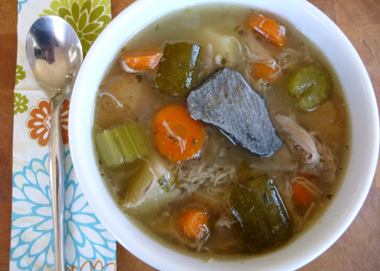

Stone soup

Description
This is my go to recipe everytime I'm coming home from a war and I have nothing to eat.
Works best with quality stone!
Ingredients
- 1 piece quality stone
- Water
- Whatever is in your host's pantry
- Salt and pepper to taste
Steps
- Get some water boiling
- Wash the stone carefully then place it in the boiling water
- Convience your host to give the rest of the ingredients to you
- Put whatever you managed to get inside the pot
- Season the soup with salt and pepper
- Enjoy!